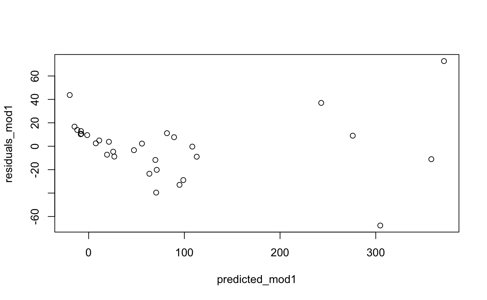

The code for this assignment is stored in the ‘meerkat’ package. It contains helper functions that are not exported and for which no visible documentation was written. Please see the code that I sent you for a detailed overview for each function.
library(meerkat)
# Create two variables
CSFI <- c(2,5,5,6,6,7,8,9)
TFI <- c(1,1,2,3,3,4,5,7,7,8)
# Calculate t-test
tt1 <- meerkat::t_test(CSFI, TFI, variance_equal = TRUE,
bootstrap_ssize = 0.7,
R=1000)
tt1## Two-sided t-test with equal variances.
##
## Summary stats:
## x y
## n 8 10
## mean 6 4.1
## var 4.57 6.54
## ------------------------
## Pooled variance: 5.68
##
## t-statistic df p-value
## 1.68 16 0.112
##
## Bootstrapped 95% CI (Naive bootstrap):
## Lower Upper Avg. Bias
## -0.55 4.44 1.69 -0.01The results indicate that there is no statistically different performance between pilots who use traditional flight instructions and pilots who are trained using computer-simulated flight instruction.
When we compare this to the built-in R function, we get:
t.test(CSFI, TFI, var.equal = TRUE)##
## Two Sample t-test
##
## data: CSFI and TFI
## t = 1.6805, df = 16, p-value = 0.1123
## alternative hypothesis: true difference in means is not equal to 0
## 95 percent confidence interval:
## -0.4967883 4.2967883
## sample estimates:
## mean of x mean of y
## 6.0 4.1The t-test We observe that the 95% confidence interval contains \(0\). This means that we may conclude there is no effect.
The print method of the t_test() function prints the information returned by this function in a neatly organized way.
The t_test() function returns an S3 object containing:
t1 <- t_test(CSFI, TFI)
names(t1)## [1] "inputs" "summary_statistics" "test"
## [4] "CI"data("gala")mod1 <- lm("Species ~ Area + Elevation + Endemics", data = gala)
summary(mod1)##
## Call:
## lm(formula = "Species ~ Area + Elevation + Endemics", data = gala)
##
## Residuals:
## Min 1Q Median 3Q Max
## -67.691 -10.530 2.387 10.529 72.723
##
## Coefficients:
## Estimate Std. Error t value Pr(>|t|)
## (Intercept) -15.891237 7.569210 -2.099 0.0456 *
## Area 0.012669 0.008936 1.418 0.1681
## Elevation -0.041439 0.023653 -1.752 0.0916 .
## Endemics 4.331791 0.304686 14.217 8.97e-14 ***
## ---
## Signif. codes: 0 '***' 0.001 '**' 0.01 '*' 0.05 '.' 0.1 ' ' 1
##
## Residual standard error: 27.29 on 26 degrees of freedom
## Multiple R-squared: 0.9492, Adjusted R-squared: 0.9433
## F-statistic: 161.8 on 3 and 26 DF, p-value: < 2.2e-16residuals_mod1 <- resid(mod1)
predicted_mod1 <- predict(mod1)
# Plot
plot(predicted_mod1, residuals_mod1)
# Make subset of the variables
y <- as.matrix(gala[, "Species"])
# Create a formula
form <- formula("Species ~ Area + Elevation + Endemics")
# Create a model matrix
X <- model.matrix(form, gala)
# Apply the formula for the linear model
linmod <- solve( t(X) %*% X ) %*% t(X) %*% y
# Create the predicted values
yhat <- X %*% linmod
# Residuals
resid <- (y - yhat)
# Plot
plot(yhat, resid)The results obtained are the same as those obtained from the lm() function
library(meerkat)
gala_mod <- linear_model(form, gala)
gala_mod## Linear regression model containing 4 predictors and 30 observations
##
## DV: Species
## IV: Area, Elevation, Endemics
##
## Formula: 'Species ~ Area + Elevation + Endemics'summary(gala_mod)## Formula: 'Species ~ Area + Elevation + Endemics'
##
## Obs. Predictors
## 30 4
##
## Summary statistics :
## Area Elevation Endemics
## mean 261.71 368.03 26.10
## variance 746686.99 177750.72 746.99
## min 0.01 25.00 0.00
## max 4669.32 1707.00 95.00
##
## Model information :
## Estimate SE t p
## (Intercept) -15.8912 7.5692 -2.0995 1.9544
## Area 0.0127 0.0089 1.4179 0.1681
## Elevation -0.0414 0.0237 -1.7520 1.9084
## Endemics 4.3318 0.3047 14.2173 0.0000
##
## F-statistic: 161.85, p-value: 0
## R-squared: 0.9492
## df: 26
##
## Residuals :
## Min. 1st Qu. Median Mean 3rd Qu. Max.
## -67.691 -10.530 2.387 0.000 10.529 72.723plot(gala_mod)